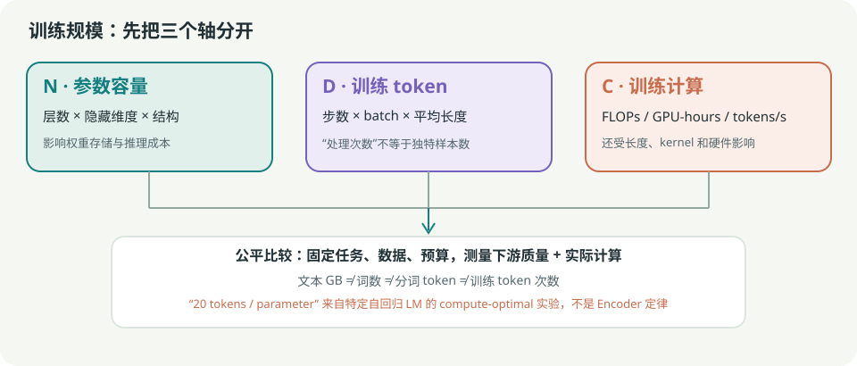

1. 一个预算问题：再加参数，还是再训练一轮
假设一支团队有固定的 GPU 训练预算，要训练用于文本分类和检索的双向 Encoder。方案 A 是扩大隐藏维度与层数，方案 B 是保持模型不变但增加训练数据与步数。哪一个会在部署时更好？答案取决于目标任务、训练数据质量、上下文长度、推理延迟和算力预算。只比较参数量并不足够。
同一类 Encoder 的历史提供了对照：BERT 原论文使用 BooksCorpus 与英文 Wikipedia，RoBERTa 在更大更多样的语料上改进训练配方，ModernBERT 则综合更新架构和长上下文训练。性能变化来自多种因素，不能仅因为更强模型使用更多数据，就将差距全部归因于数据量。

2. 先统一计量单位：GB、词、token 与训练步数不同
语料字节描述磁盘上的文本大小，受编码、压缩、语言、清洗方式影响；词数依赖分词规则；token 数依赖具体模型的 tokenizer 与特殊符号；训练中处理的 token 数还要乘上数据重复呈现、序列填充和丢弃情况。因此不能把 13GB 文本直接当成 13B token，也不能把 3.3B 英语词直接当成 3.3B WordPiece token。
若一次优化更新处理有效 batch B 条序列、每条平均 L 个实际参与计算的 token，更新 S 次，则 token 处理量的一阶近似为：
这个公式记录的是“被处理的 token 次数”，不是“互不重复的 unique token 数”。假设 10 万步、batch 256、每条有效长度 128，则约处理 32.768 亿 token 次数；假设其余不变而长度 512，则变为约 131.072 亿。两者都属于教学算术示例，不表示 BERT 全部训练步骤都使用了某个固定长度。
对于 BERT 原论文尤其要注意：前 90% 的步骤主要使用 128 长度，最后 10% 使用 512 长度；若忽略这种长度日程，就会高估每步计算。
3. 三条轴：容量、数据覆盖与计算
参数 N 决定模型容量与部署成本，数据 D 决定被优化的经验分布覆盖，计算 C 是实际使用的硬件运算资源。固定 C 时，提高 N 往往意味着必须减少可处理的训练 token 或缩短上下文；反过来固定 N 时可以投入更多优化步骤或更长序列。
Decoder-only Transformer 常见的简化训练计算近似为 C≈6ND FLOPs，但它忽略注意力项、架构细节、输出层、实际长度和工程开销。对于带 MLM 词表头、可能附加辅助目标以及不同 attention 实现的 Encoder，这个式子最多是规划数量级的起点，不应当作精确账单。
对实际项目，建议以 profiler 或真实吞吐量测量 tokens/s、GPU-hours、平均显存与训练 loss，并记录 optimizer step、batch、tokenizer、序列长度及是否启用激活重计算。指标不统一时，不应该声称某个模型“计算效率高出几倍”。
4. Chinchilla 究竟说了什么——又没有说什么
Hoffmann 等人在 2022 年对自回归语言模型进行规模实验，发现固定计算预算下，模型参数量与训练 token 数应大致同步增长。其代表性实验中，Chinchilla 使用约 70B 参数和约 1.4T token，在与 280B 参数的 Gopher 类似训练计算预算下取得更好的任务表现。常被概括的“约 20 tokens/parameter”来自这类特定模型族、目标、数据与计算设定下的经验配比。
即使在自回归模型里，若推理需求昂贵，固定总生命周期成本的最优选择也可能不同于“只计训练 FLOPs”的最优选择。Encoder 常面向批量分类或检索，延迟和向量存储成本也是目标函数的一部分。
5. Encoder 的证据链：BERT → RoBERTa → ModernBERT
| 工作 | 事实锚点 | 可以得出的结论 | 不能直接推导 |
|---|---|---|---|
| BERT（2018/2019） | BooksCorpus + Wikipedia；BERT-Base 约 110M、Large 约 340M 参数 | 预训练 + 微调支持多种理解任务 | 某个固定数据大小已足够所有 Encoder |
| RoBERTa（2019） | 约 160GB 多源英文语料，优化 mask、batch、长文本打包、训练步数 | 原始 BERT 配方仍可改进 | 提升 100% 来自数据规模单因素 |
| ModernBERT（2024/2025） | 论文报告约 2T training tokens，原生 8192 上下文，现代化 Encoder 训练设计 | 现代 Encoder 可以在更大 token 预算和更长上下文下训练 | Chinchilla 20:1 已被验证为 Encoder 最优 |
ModernBERT 的训练 token 统计是训练中处理的 token 次数，不能与 BERT 论文中“33 亿英语词”或 RoBERTa 语料 GB 直接相除。ModernBERT 同时改变 attention、位置编码、激活、归一化与训练阶段等配置；跨论文只比较预训练 token 数并不构成受控实验。
6. 真正可执行的受控实验设计
- 确定任务组合与验证集：例如文本分类、NER、句向量检索。用固定的下游指标选择模型，而不只看 MLM loss。
- 统一 tokenizer 与语料分布；或明确记录它们的变化。保持清洗和去重策略一致，分离数据量与领域多样性。
- 建立 N×D 小网格：例如 50M / 100M / 200M 参数 × 5B / 10B / 20B 训练 token；这是试验设计示例，不是预测哪个点最好。
- 报告每组实际 FLOPs、GPU-hours、不同长度分布、吞吐、峰值显存；比较相同训练计算预算的等值曲线。
- 在多个随机种子上重复预训练或至少重复下游微调，报告方差；锁定测试集直到选型结束。
如果语料有大量重复，增加重复 epoch 可能主要提高训练 token 计数，却没有等比例增加新信息。应同时记录 D_seen 与去重后 D_unique。对低资源语言或专业领域，数据质量、采样概率和语言覆盖可能比盲目增加总 token 更关键。
7. 怎样判断欠训练、过拟合与目标错配
仅凭训练 loss 持续下降不能说明泛化改善。更有信息量的是对同一 held-out 语料监控 MLM loss，并用任务组验证迁移。训练 loss 与验证 loss 同时下降可能意味着尚未收敛；训练 loss 下降而验证 loss 上升说明可能过拟合或分布错配；如果两者都不动，首先检查优化器、mask 标签、有效 batch、学习率和 tokenization。
还应区分三个资源瓶颈：算力瓶颈（GPU 利用率与吞吐不足）、容量瓶颈（适当扩大 N 有收益）与数据瓶颈（新领域/更高质量数据有效）。它们的诊断方法不同，不能用“模型再大一点”作为统一解法。
8. 交互：把长度日程写进 token 账本
下面用相同 batch 与 step 数比较训练 token 处理量；只做确定性的乘法，不模拟模型质量。
三种处理量计算
Batch 均为 256 条序列、总 100 万次更新。数值是算术示例，不包含 padding 与重复数据治理。
1,000,000 × 256 × 128 = 32.768B token 次数 注意：这是固定长度的反事实示意，不是 BERT 训练的完整实测 token 统计。
关键结论
- 语料 GB、英语词数、分词后 token 和训练中累计处理 token 是不同单位。
- Chinchilla 来源于自回归模型的固定计算实验，20:1 不能直接用于评判 Encoder 的最优比例。
- 跨 BERT、RoBERTa 和 ModernBERT 的差异同时包含数据、目标、架构和工程配方，不能做未经控制的因果归因。
- 用受控的 N×D×C 实验、held-out loss 与下游任务指标做决策，并把推理成本纳入预算。
原始资料与核查定位
- Devlin et al., BERT, §3、Appendix A.2（训练数据、规模与长度阶段）。
- Liu et al., RoBERTa, §3.2、§4、Table 4（配方和开发集控制比较）。
- Hoffmann et al., Training Compute-Optimal Large Language Models, §3–4（针对自回归 LM 的计算最优实验）。
- Warner et al., ModernBERT, §3、Appendix（训练 token 与长上下文配置）。